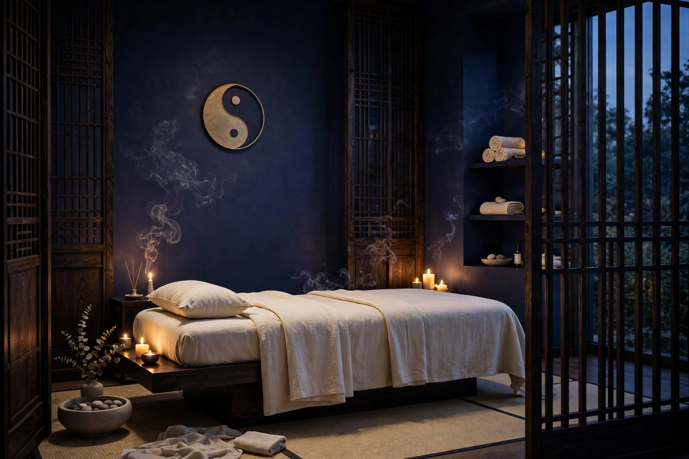
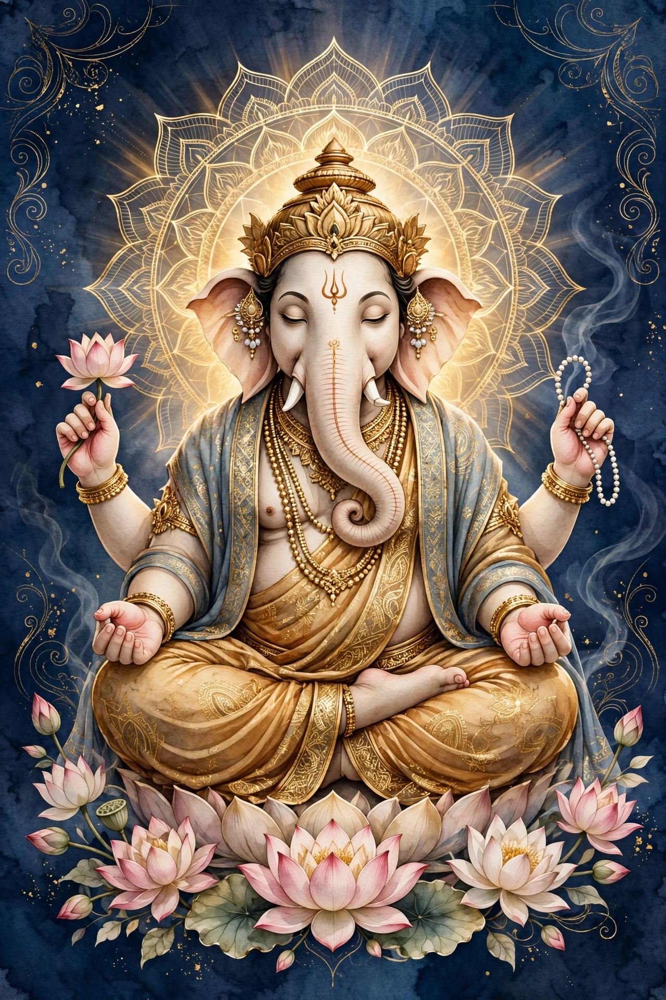
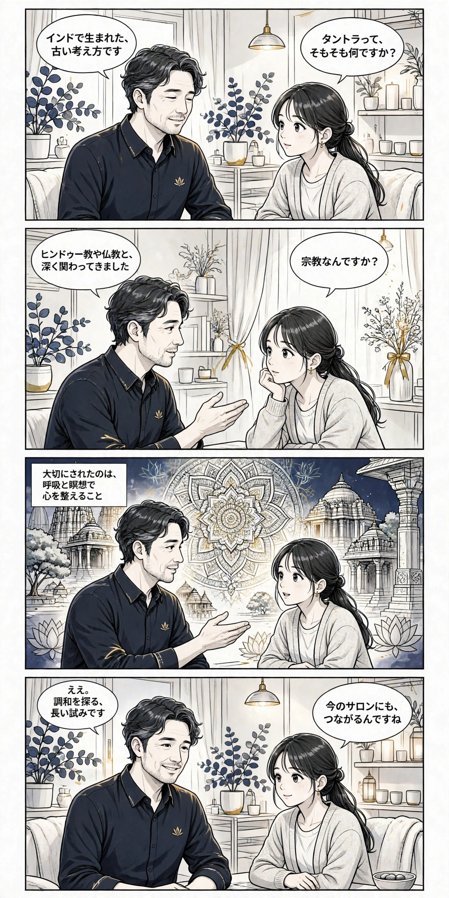
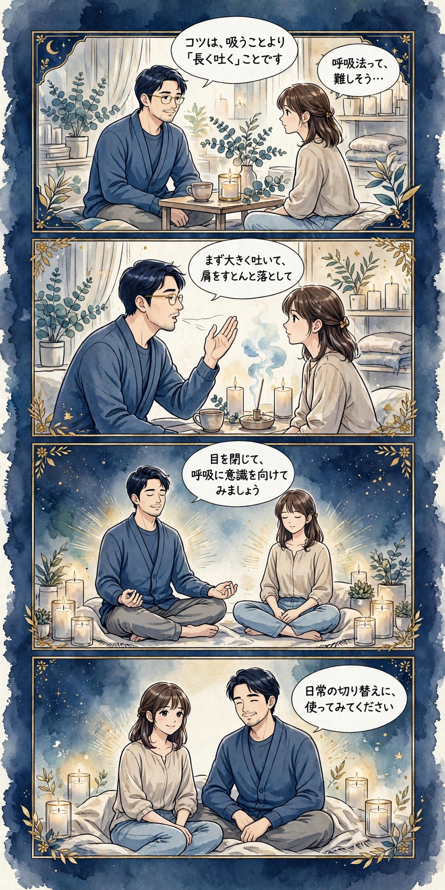
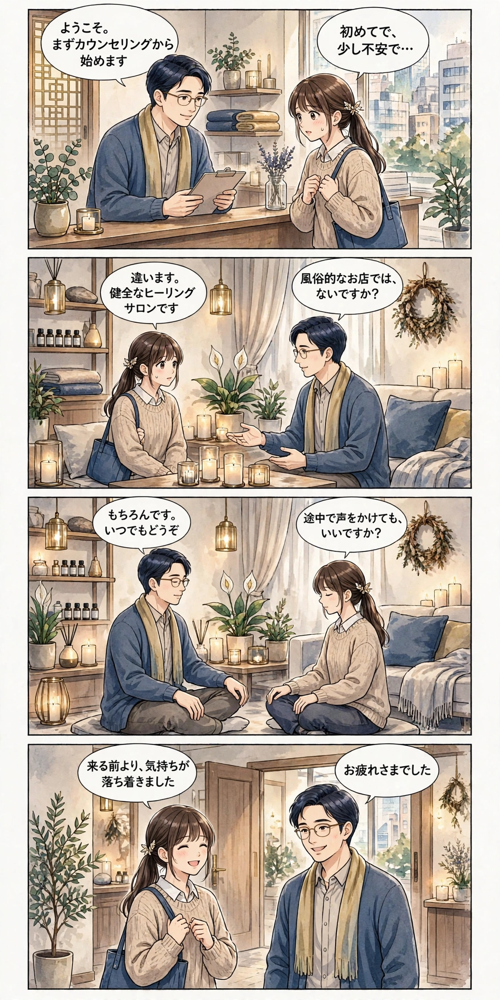

スタンダードコース
90分
15,000円（税込）
初めての方におすすめの基本コース。呼吸に合わせたオイルトリートメントで、全身をバランスよくケアします。

TANTRA MASSAGE & HEALING — UMEDA, OSAKA
陰と陽の調和が、心とからだを静かにほどく
呼吸・瞑想・気功の考え方を取り入れたタントラマッサージで、心身のバランスとエネルギーの巡りに寄り添うヒーリングサロンです。 大阪・梅田の完全予約制プライベート空間で、国家資格を持つセラピストがお一人おひとりに向き合います。
営業時間は10:00〜20:00、完全予約制・不定休です
タントラは、インドに古くから伝わる心身の調和の考え方です。当サロンではその中でも、呼吸・瞑想・エネルギーの巡りに焦点を当て、 東洋医学の「陰陽」や気功の考え方と組み合わせた、独自のヒーリングとしてご提供しています。
ゆったりとした呼吸に合わせたオイルトリートメントの手技が、日常の緊張で固まった心とからだを少しずつゆるめていきます。 施術中は静かな空間で、ご自身の内側に意識を向ける瞑想のような時間をお過ごしください。
施術は、鍼灸師の国家資格を持ち、施術歴30年のセラピスト「建人」が担当します。東洋医学の知識に基づいた、丁寧で確かな手技が土台です。
梅田・堂山町のレンタルサロン「L'OM OSAKA」内の個室で、完全予約制にて施術を行います。他のお客様と顔を合わせることはありません。
施術前に体調やご希望をうかがい、その日の状態に合わせて内容を調整します。気になることがあれば、遠慮なくご相談ください。
全コース、カウンセリングとシャワーの時間を含んだ料金です。表示料金以外の追加費用はかかりません（出張の場合は別途、出張費のみ）。
ご予約からお帰りまで、全コースにカウンセリングとシャワーの時間が含まれています。
LINEからご希望の日時とコースをお知らせください。空き状況を確認してご返信します。
サロン到着後、その日の体調やお悩み、ご希望の圧の強さなどをうかがいます。
施術の前にシャワーでリフレッシュ。ご用意したウェアにお着替えいただきます。
呼吸のリズムに合わせたオイルトリートメントと気功を取り入れた手技で、全身をゆったりとケアします。
施術後はシャワーでオイルを流し、静かに心身を日常へ戻していく時間をお取りします。
お身体の状態やセルフケアのポイントをお伝えします。お会計のうえ、お帰りとなります。
鍼灸師の国家資格を持ち、施術歴30年。長年にわたり東洋医学と手技療法に携わる中で、呼吸・瞑想・気功を取り入れたタントラの考え方と出会いました。
YinYang-Harmonyでは、東洋医学の「陰陽」の調和という視点を大切に、お一人おひとりの状態に寄り添った施術を行っています。 日常の緊張から離れ、自分自身と静かに向き合う時間をお届けできれば幸いです。
歴史や思想を、学術・文化的な視点から丁寧にご紹介します。初めての方の疑問解消から、呼吸・瞑想・気功の基礎まで、当サロンの考え方の土台となる記事をまとめました。
当サロンが大切にしているのは、派手な体験談ではなく、長い時間をかけて受け継がれてきた「心とからだの調和」という視点です。 下の目次から、気になるテーマをお選びください。各記事は単独でも読める構成になっています。また、文章だけでは伝わりにくいテーマは、マンガ形式の解説パートでもご紹介しています。

Ganesha — Symbol of Beginnings
象の頭を持つガネーシャは、インドで古くから親しまれてきた神様です。ヒンドゥー教の伝統では、物事の始まりに敬意を払う存在、障害を取り除き、知恵と学びを支える存在として語られてきました。新しいことを始める場にその姿が置かれることが多いのも、そのためと伝えられています。
タントラやヨーガの歴史を辿るコラムの入口に、このイラストを置きました。蓮の花と曼荼羅、静かに目を閉じた表情は、当サロンが大切にする「慌てず、自分の巡りに戻っていく」という時間のイメージとも重なります。
※ 本イラストは当サイトのために描いたオリジナル作品です。ガネーシャは信仰の対象として敬意を持って描いています。当サロンは特定の宗教とは関係のないリラクゼーションサロンであり、参拝や信仰をお願いするものではありません。
本コラムは、歴史・文化・伝統的な考え方を紹介する読み物です。マンガパートも含め、特定の宗教への勧誘を目的とするものではなく、医療的な効能を保証するものでもありません。不確かな起源や伝承については「〜と伝えられています」という形でご紹介しています。マンガの登場人物はオリジナルキャラクターです。
「タントラ」という言葉は、今日ではさまざまな意味で使われています。その本来の姿を知るには、インドで生まれ、ヒンドゥー教や仏教と深く関わりながら形を変えてきた、1000年以上にわたる歩みを辿る必要があります。
案内役のセラピスト・建人と、初めて来店した来訪者の会話で、歴史の要点を先に掴めます。マンガの下に、コマごとのセリフを文字でも掲載しています。

セリフ（文字版）
来訪者タントラって、最近よく聞くけど、もともとは何なんですか？
建人インドで生まれた、とても古い考え方と実践の体系なんです。文献に姿を現し始めるのは、5〜7世紀ごろと伝えられています。
来訪者宗教なんですか？ なんだか難しそうで…
建人ヒンドゥー教や仏教と深く関わってきました。日本に伝わった密教とも、曼荼羅や真言（マントラ）という点で歴史的につながっているんですよ。
建人当時大切にされたのは、曼荼羅を眺めたり、呼吸や身体の感覚を通したりして、心を整える工夫でした。抽象的な教えを、五感で理解しようとしたんですね。
来訪者寺院や曼荼羅の絵が出てくるのは、そういう理由なんですね。
来訪者今のサロンでは、その中の呼吸や瞑想を大切にしてるんですね。
建人そうです。歴史を知ると、派手なイメージではなく、「調和を探る長い試み」だったことが分かります。このあとの本文で、時代ごとに辿ってみましょう。
タントラ（Tantra）はサンスクリット語で、語源は「織る」「広げる」という意味の動詞 tan に関連すると説明されることが多く、「織物」「体系」「経典そのもの」を指す言葉として使われてきました。つまり本来は、特定の実践だけを指す言葉ではなく、教えや実践の体系をまとめた文献・伝統を広く指す言葉でした。ヒンドゥー教、仏教、ジャイナ教など、インド発祥の複数の宗教伝統の中に、それぞれ「タントラ」と呼ばれる文献群が存在します。
タントラ的な思想や儀礼がいつ始まったのか、正確な起源は分かっていません。口承で伝わっていた実践が、文献として明確な形を取り始めるのは、おおむね5〜7世紀ごろのインドと研究者の間では考えられています。この時代、ヒンドゥー教のシヴァ派や女神信仰（シャクティ信仰）を中心に、経典だけでは届かない人々にも開かれた実践として、タントラの伝統が各地に広がっていったと伝えられています。
当時のタントラの特徴としてよく挙げられるのは、マントラ（真言）、マンダラ（曼荼羅）、ムドラー（印）といった象徴的な手段を用いること、そして師から弟子への口伝を重んじたことです。これらは抽象的な教えを、身体感覚や視覚イメージを通して理解しようとする工夫でもありました。
ヒンドゥー教のタントラ伝統では、宇宙を動かすエネルギー（シャクティ）と、それを見守る意識（シヴァ）という対になる二つの原理の統合が大切なテーマとされてきました。ここでいう統合は、どちらか一方を否定するのではなく、両方があって初めて全体が成り立つという考え方です。この「対の調和」という発想は、後の記事でご紹介する陰陽の考え方とも響き合います。
日本の読者にとって身近な接点は、密教です。真言宗や天台宗に伝わる曼荼羅、真言、灌頂といった文化は、インド後期仏教のタントラ的な流れと歴史的につながっていると考えられています。ただし、密教はあくまで仏教としての教義と修行体系を持った独立した伝統であり、「タントラ＝密教」と単純に同一視できるものではありません。共通の源流を持ちながら、それぞれの土地と時代で異なる形に育った、と理解するのがより正確です。
歴史を辿ると見えてくるのは、タントラが単一の教えではなく、時代と地域を超えて受け継がれ、姿を変えてきた大きな流れだということです。当サロンでは、その長い歴史への敬意を持ちながら、現代の生活に無理なく取り入れられる部分――呼吸、瞑想、心身の調和への意識――を大切にしています。
↑ コラム目次に戻るタントラの思想の核にあるのは、「分けて否定する」のではなく「対になるものを受け入れ、全体として調和させる」という姿勢です。それは東洋医学の陰陽論と、驚くほど近い発想です。
私たちは日常の中で、物事を二つに分けて考えがちです。緊張と休息、活動と静止、理性と感情、からだと心。しかしタントラの伝統では、こうした対立は「どちらかを捨てる」ためのものではなく、両方が巡り合うことで一つの全体になるためのものと捉えられてきました。昼があるから夜の休息に意味があり、力を入れる時間があるからこそ、ゆるむ時間が必要になる――その循環そのものを大切にする考え方です。
中国の伝統医学に由来する陰陽論では、万物は陰と陽という二つの性質のバランスで成り立ち、どちらか一方だけが固定されることはなく、常に互いに移り変わると考えます。太極図（陰陽魚）が象徴するのは、まさにこの「白の中にも黒があり、黒の中にも白がある」という相互依存の姿です。
インドのタントラ思想と中国の陰陽論は、起源も文献も異なる独立した伝統です。それでも、「相反するものを統合し、偏りのない状態を目指す」という方向性には共通するものがあります。当サロン名「YinYang-Harmony（陰陽の調和）」は、この二つの伝統に共通する視点への敬意を込めたものです。
誤解されやすい点ですが、調和とは何も感じない無の状態や、常に穏やかでいることではありません。伝統的な考え方では、調和とはエネルギーが滞らずに巡っている状態を指します。呼吸が浅くなれば深く吸い直すように、偏りに気づいて戻していく、その往復のリズム自体が調和です。施術においても、強い緊張をいきなり取り除こうとするのではなく、呼吸のリズムに寄り添いながら、少しずつ巡りを整えていくことを大切にしています。
思想と聞くと難しく感じられるかもしれませんが、その実践はとても日常的です。「偏りに気づき、戻していく」――その小さな繰り返しが、陰陽・調和の考え方の入り口です。
↑ コラム目次に戻るヨーガやタントラ、気功に共通して大切にされてきたのが「呼吸」です。特別な道具も場所もいらない、最も身近な実践の基礎をご紹介します。
「長く吐く」ことから始める呼吸の感覚を、建人と来訪者の会話で紹介します。息苦しさを感じたら無理をせず、通常の呼吸に戻してください。

セリフ（文字版）
来訪者呼吸法って、難しくないですか？ 特別なやり方を覚えないとダメで…
建人大丈夫です。基本はシンプルで、吸うことより「長く吐く」ことを意識するんです。
建人まず口から大きく吐いて、肩をすとんと落として。次に鼻からゆっくり吸って、吐くときは吸うときより少し長めにしてみましょう。
来訪者吐くときに、肩の力が抜けていく感じがします。
建人では目を閉じて、呼吸の感覚だけに意識を向けてみましょう。考えが浮かんでも大丈夫。気づいて、また呼吸に戻れば、それが瞑想の実践です。
来訪者5分だけでも、頭の中が静かになった気がします。
建人その感覚を、朝起きたときや寝る前など、日常の切り替えに使ってみてください。無理のない範囲で続けるのがコツです。
サンスクリット語で呼吸や生命エネルギーを指す「プラーナ」という言葉があるように、インドの伝統では、呼吸は単なる空気の出し入れ以上のものとして捉えられてきました。中国の伝統でも「気」は呼吸と深く結びつけて語られます。現代の私たちにとっても、呼吸は自律神経と関わりが深い、数少ない「意識的に調整できる身体のリズム」として知られています。緊張したときに息が浅く速くなる経験は、多くの方がお持ちではないでしょうか。
呼吸法には多くの種類がありますが、基礎として共通するのは、吸うことよりも吐くことをゆっくり長くする意識です。吐く息に合わせて肩や顎の力が抜けていく感覚を確かめながら行うのが、無理のない始め方です。回数や秒数にこだわりすぎず、「今より少しだけゆっくり」を目安にしてください。
基本の呼吸 ― 座って行う4ステップ
呼吸法はリラクゼーションのための一般的な実践です。息苦しさやめまいを感じたら無理をせず、通常の呼吸に戻してください。持病がある方、妊娠中の方は、長時間の息止めを伴うような呼吸法は避け、事前に医師へ相談されることをおすすめします。当サロンの施術でも、呼吸は「合わせるもの」として扱い、無理な誘導は行いません。お客様ご自身のリズムを最優先しています。
↑ コラム目次に戻る瞑想というと「雑念を消す修行」という印象があるかもしれません。しかし伝統的な瞑想の本質は、思考を消すことではなく、思考に振り回されずに観察する姿勢にあります。
瞑想の実践は、インドのヨーガや仏教をはじめ、世界の多くの宗教・思想の伝統の中で育まれてきました。タントラの伝統においても、瞑想は中心的な実践の一つであり、呼吸や身体感覚、イメージなどを手がかりに、意識を一つの対象へ静かに向ける方法が伝えられてきました。その目的は、神秘的な体験を保証することではなく、自分の内側で起きていることに気づく力を養うことにあったと理解されています。
近年よく耳にする「マインドフルネス」は、仏教の瞑想実践に由来する考え方を、宗教色を取り除いて現代の心理学や医療、ビジネスの場に取り入れたものです。「今、この瞬間の感覚に、判断を加えずに注意を向ける」という定義が一般的です。瞑想が広い伝統の総称であるのに対し、マインドフルネスはその中の一つの姿勢や技法を指す、と整理すると分かりやすいでしょう。どちらにも共通するのは、過去の後悔や未来の不安に引っ張られる意識を、「今」に戻すという方向性です。
「雑念が浮かんだ＝失敗」ではありません。浮かぶことに気づけた時点で、瞑想は成立しています。完璧を求めず、短い時間を続けることのほうが大切だと、多くの入門書でも共通して語られています。
当サロンの施術中は、照明と音を落とした静かな空間で、呼吸に合わせたゆっくりとした手技を行います。座って行う瞑想とは形が異なりますが、「感覚に意識を向け、外の刺激から離れる」という点では通じるものがあります。施術中に考え事が次々浮かんでも、それで構いません。どうぞ、ありのままの状態でお過ごしください。
↑ コラム目次に戻る「気」は目に見えません。それでも東洋の伝統医学や武術、養生法の中では、2000年以上にわたって身体を理解するための重要な概念として使われ続けてきました。その考え方を、歴史と文化の視点からご紹介します。
古代中国の思想では、気は万物を構成し、動かす根本的な要素と考えられました。医学の古典とされる『黄帝内経』をはじめとする文献では、気は体内を「経絡」と呼ばれる通り道に沿って巡り、その巡りの滞りや偏りが不調と関係するという世界観が展開されています。これは現代医学の解剖学とは異なる、伝統医学独自の身体観です。科学的に実証された仕組みとしてではなく、長い臨床と観察の積み重ねの中で育った「身体の見方」として理解することが大切です。
気功は、姿勢（調身）、呼吸（調息）、意識（調心）の三つを整えることで、気の巡りを意識する中国の伝統的な養生法です。ゆっくりとした動作のものから、静かに座る・立つものまで形はさまざまですが、共通するのは「力を抜き、呼吸と意識を合わせる」という点です。太極拳も、広い意味では気功の流れと深く関わる実践として知られています。
興味深いことに、インドの伝統でも、体内を巡る生命エネルギー「プラーナ」と、その通り道「ナーディ」という概念が語られてきました。中国の「経絡」とインドの「ナーディ」は、起源も理論も異なるものですが、「身体には目に見えない巡りがあり、その流れを整えることが大切だ」という発想の近さは、アジアの身体文化に共通する感性を感じさせます。タントラ、ヨーガ、気功、鍼灸が、現代のヒーリングの場で一緒に語られることが多いのは、この響き合いが背景にあります。
セラピストである建人は、鍼灸師として東洋医学を学び、気功を取り入れた手技を施術に活かしています。具体的には、呼吸のリズムに手の動きを合わせること、経絡の流れを意識した順序で全身に触れていくこと、そして施術者自身の呼吸と姿勢を整えてから施術に入ること、といった点です。これらは特別な力を誇るものではなく、施術の丁寧さと一貫性を支えるための、伝統的な身体観に基づいた工夫とお考えください。効果の感じ方には個人差があり、治療を目的としたものではありません。
↑ コラム目次に戻るチャクラは、インドのヨーガやタントラの文献に登場する概念です。身体の中心線に沿ってエネルギーの集まる場所があるという伝統的なイメージを、文化知識として整理してご紹介します。
チャクラはサンスクリット語で「車輪」「円盤」を意味します。伝統的な文献では、体内を流れるエネルギー（プラーナ）の結節点として、背骨に沿って複数のチャクラが配置されるイメージで語られてきました。文献や流派によって数や解釈には違いがありますが、現代では一般に7つのチャクラで説明されることが多くなっています。なお、チャクラは解剖学的に確認された器官ではなく、伝統的な象徴体系である点をご理解のうえお読みください。
チャクラの知識は、自分の身体感覚に意識を向けるための「地図」や「比喩」として活用するのが、現代的な付き合い方といえます。たとえば「緊張するとみぞおちが固くなる」「胸が詰まる感じがする」といった日常の感覚を、チャクラの位置と重ねて観察してみると、自分の状態に気づく手がかりになります。「チャクラが開く・閉じる」といった表現は伝統や現代のスピリチュアル文化の中で使われる比喩であり、医学的な診断や状態を指すものではありません。当サロンでも、チャクラを治療の対象として扱うことはありません。
↑ コラム目次に戻るクンダリーニは、ヨーガやタントラの文献に登場する象徴的な概念です。神秘的な体験談だけが一人歩きしやすいテーマだからこそ、文献ではどう語られてきたのかを、落ち着いて整理します。
クンダリーニはサンスクリット語で「とぐろを巻いたもの」を意味すると説明されます。伝統的なヨーガ文献（『ハタ・ヨーガ・プラディーピカー』など中世の文献が知られています）では、背骨の基部に眠るエネルギーとして象徴的に描かれ、修行によってそれがチャクラを上昇していくというイメージで語られてきました。これはあくまで伝統的な宗教・修行文化の中の象徴的な描かれ方であり、そのまま身体の生理現象を説明するものではありません。
20世紀以降、ヨーガが世界に広がる過程で、クンダリーニという言葉も瞑想やウェルネスの文脈で紹介されるようになりました。「内側に眠る可能性が目覚める」という比喩として共感を集める一方で、強い体験をうたう情報や、十分な指導なしに集中的な実践を促す情報も見られます。伝統の中でも、クンダリーニに関わる実践は師の指導のもとで段階的に行うものと位置づけられてきたと伝えられており、安易に強い体験を求めるものではなかった点は、知っておく価値があります。
当サロンでは、クンダリーニの「覚醒」を目的とした施術や、その体験を保証するようなご案内は行っておりません。この記事は、タントラやヨーガの文化を知るための一般的な解説としてお読みください。サロンの施術は、呼吸とタッチによるリラクゼーションが中心です。もし瞑想やヨーガの実践中に強い不安感や体調の変化を感じた場合は、実践を中止し、必要に応じて医療機関へ相談されることをおすすめします。伝統文化への興味は、無理のない範囲で、穏やかに深めていくのがよい付き合い方だと考えています。
↑ コラム目次に戻る「タントラマッサージ」という言葉は、使う人やお店によって意味が大きく異なるのが実情です。だからこそ当サロンでは、自分たちが何を提供し、何を提供しないのかを、言葉を尽くして明確にします。
歴史の記事で触れたように、タントラ本来はインドの宗教・思想の大きな伝統を指す言葉です。しかし20世紀後半に西洋を経由して広まる過程で、「タントラマッサージ」という呼称は、呼吸や瞑想を取り入れたリラクゼーションを指す場合もあれば、全く異なる文脈で使われる場合も生まれました。日本でも同様に、定義が統一されているわけではありません。そのため、名称だけで判断せず、そのサロンが具体的に何を行うのかを説明しているかが、選ぶ際の大切な基準になります。
YinYang-Harmonyのタントラマッサージは、次の考え方に基づくリラクゼーションです。
当サロンは、心身の調和とリラクゼーションを目的とした健全なヒーリングサロンです。医療行為ではなく、風俗的サービスでもありません。そうしたご要望にはお応えできません。また、施術内容は事前のカウンセリングでご説明し、ご同意のうえで進めます。途中で気になることがあれば、遠慮なくお声がけください。言葉のイメージに期待や不安を膨らませるのではなく、具体的な説明のもとで安心してお越しいただくこと――それが当サロンの考える「タントラマッサージ」の誠実なあり方です。
↑ コラム目次に戻るタントラという言葉には、さまざまなイメージが付着しています。初めての方が抱きやすい誤解や不安を一つずつ取り上げ、当サロンの実際をお伝えします。
初めての方の「ちょっと不安…」という気持ちから、カウンセリング、呼吸に合わせた施術の説明、お帰りまでをマンガにしました。当サロンは健全なリラクゼーションサロンです。

セリフ（文字版）
来訪者は、初めてで…正直、少し不安で来ました。
建人ようこそ。まずはカウンセリングで、今日の体調やご希望、圧の好みをゆっくりうかがいます。分からないことは何でも聞いてください。
来訪者特別な儀式とか、勧誘とかはないんですか？ 風俗的なお店ではないかも心配で…
建人ありません。当サロンは呼吸とオイルトリートメントを中心にした健全なヒーリングサロンです。風俗的なサービスは行っていませんし、信仰をお願いすることもありません。
建人施術は呼吸のリズムに合わせて進めます。途中で気になることがあれば、いつでも声をかけてくださいね。
来訪者先に流れを説明してもらえると、安心して任せられます。
来訪者ありがとうございました。来る前より、気持ちが落ち着きました。
建人こちらこそ。ご予約前のLINEでのご質問だけでも歓迎しています。「初めてで不安」と添えていただければ、より丁寧にご案内します。
いいえ。当サロンは特定の宗教とは関係のないリラクゼーションサロンです。思想や歴史は読み物としてご紹介しますが、信仰をお願いすることは一切ありません。
内容は、呼吸に合わせたオイルトリートメントと、静かな環境での休息が中心です。事前に流れをご説明し、同意のうえで進めます。
そのようなサービスは行っておりません。当サロンは健全なヒーリングサロンとして明言し、その旨をこのサイトでも繰り返しお伝えしています。
施術は鍼灸師の国家資格を持ち、施術歴30年のセラピストが、完全予約制の個室で担当します。料金も事前に明示し、追加請求はありません。
特別な体験や効果を保証するものではありません。感じ方には個人差があります。穏やかな休息の時間としてお考えください。
体調、圧の好み、気になることなど、カウンセリングで何でもご相談ください。内容の調整や、場合によっては施術をお控えいただく判断も含め、誠実に対応します。
ご予約はLINEで承ります。希望日時とコースをお知らせください。当日はカウンセリングから始まり、シャワー、施術、シャワー・クールダウン、お会計という流れです（詳しくは「施術の流れ」をご覧ください）。服装は普段着で問題ありません。施術用のウェアをご用意しています。
分からないことは、ご予約前のLINEでのご質問だけでも歓迎しています。「初めてで不安」と一言添えていただければ、より丁寧にご案内します。どうぞ安心してお問い合わせください。
↑ コラム目次に戻るタントラの伝統の中で、呼吸と瞑想は「音」と切り離せないものとして育まれてきました。決まった言葉を声に出して唱える実践は、なぜ生まれ、どのように受け継がれてきたのでしょうか。マントラの文化から、日本の密教に伝わる瞑想「阿字観」まで、声と息の歴史を辿ります。
言葉を声に出して唱えると、息は自然と長く、一定のリズムで吐かれるようになります。インドの伝統では、祈りの言葉や短いフレーズを繰り返し唱える実践が古くから行われてきたと伝えられていますが、その背景には、音そのものへの深い関心がありました。抽象的な教えを頭だけで理解するのではなく、声に出し、耳で聞き、息の流れとして身体で感じる――タントラが象徴的な手段を重んじた伝統であることは、第1回「タントラの歴史」でも触れたとおりです。音と呼吸の結びつきは、その代表例といえます。
マントラはサンスクリット語で、「考える」を意味する語根と「道具」を意味する接尾辞の組み合わせと説明されることが多く、「心を守るもの」「思考の道具」といった解釈で紹介されます。短い音節から経文の一節まで形はさまざまで、伝統的には、意味を辞書的に理解すること以上に、正確な発音とリズムで唱え続けることが重んじられてきたと伝えられています。代表的な音節として知られる「オーム（ॐ）」も、声に出すときは一息の中で音が伸びていくため、唱える行為そのものがゆっくりとした呼気の練習になっていました。
また、マントラには「種字（ビージャ）」と呼ばれる、一音節に神格や概念を象徴させる考え方も育ちました。一つの音に大きな意味を凝縮させるこの発想は、後の瞑想のあり方――短い対象に意識を静かに向け続ける方法――にもつながっていきます。
タントラや密教の実践が、長く「秘伝」とされてきた理由の一つに、伝達方法の問題があります。マントラの発音や瞑想の手順は、文字だけでは正確に伝わらないと考えられ、師が弟子に直接、口から耳へ伝える「口伝」が重んじられました。日本でも、密教の伝法には「灌頂（かんじょう）」と呼ばれる儀礼的な伝授の形が伝えられています。これは神秘性のためだけではなく、学ぶ順序を整え、受け手の理解に合わせて段階的に進めるための、教育上の工夫でもあったと理解されています。印刷も録音もない時代に、音の文化を正確に残すための仕組みだった、と見ることもできるでしょう。
その流れが日本で結実した瞑想の一つに、真言密教の「阿字観（あじかん）」があります。阿字観では、梵字の「阿（ア）」の文字を月輪（満月のような円）の上に観想し、呼吸に合わせてそのイメージを静かに保ち続ける方法が伝えられてきました。「阿」はサンスクリット語の最初の音であり、密教の教えの中では「すべての音の源」として象徴的な位置づけを持つと説明されます。息を整え、文字と円という最小限の対象に意識を向けるこの瞑想は、第4回「瞑想とマインドフルネス」で紹介した「一つの対象に注意を向け、逸れたら戻す」という基本構造と、はるか昔から地続きだったことを教えてくれます。
ただし、阿字観は仏教・密教としての教義と作法を持つ独立した修行法であり、健康法として切り取ってよいものではありません。ここでは、あくまで「呼吸と瞑想が、音やイメージと結びついて文化として育ってきた」ことを示す歴史的な事例としてご紹介しています。
現代の私たちの生活にも、声と呼吸を結びつけた習慣は残っています。たとえば、落ち着きたいときに思わず深いため息をつくこと、歌を口ずさむと気分が切り替わること、読経や唱題に限らず「声に出して読む」ことが集中を助けること。これらを伝統の実践と同一視はできませんが、息にリズムを与えるものとして音や言葉を使うという感覚は、時代を超えて受け継がれてきたものといえるかもしれません。
当サロンの施術でも、言葉を唱えるような宗教的な実践は行いません。ただ、呼吸のリズムを大切にし、静かな音環境の中で感覚に意識を向けるという姿勢は、この長い文化の延長線上にあるものと考えています。具体的な呼吸の整え方については第3回「呼吸法（ブリージング）の基礎」で、サロン全体の考え方については「タントラとは」でご紹介しています。音と息の歴史を知ることが、日々の何気ない一呼吸を見直すきっかけになれば幸いです。
↑ コラム目次に戻るはい。当サロンのタントラマッサージは、呼吸・瞑想・気功の考え方を取り入れた、心身の調和のためのリラクゼーションです。施術前に丁寧にカウンセリングを行い、内容をご説明してから始めますので、初めての方も安心してお越しください。
ありません。当サロンは健全なヒーリングサロンであり、風俗的サービスを目的としたものではありません。そのようなご要望にはお応えできませんので、ご理解のうえご予約ください。
ご予約はLINEにて承っています。ご希望の日時・コース・お名前をお送りください。営業時間は10:00〜20:00、完全予約制・不定休です。当日のご予約は空き状況によりますので、お早めのご連絡をおすすめします。
はい、ご自宅やホテルへの出張も可能です。梅田近郊は出張費無料、その他の地域は交通費実費と出張手数料3,000円〜がかかります。場所と日時をLINEでご相談ください。
発熱時や体調がすぐれない場合、妊娠中の方、皮膚に炎症がある場合などは、施術をお控えいただくか内容を変更する場合があります。当サロンの施術は医療行為ではありませんので、治療中のご病気がある方は、事前に主治医へご相談のうえカウンセリング時にお知らせください。
ご都合が変わった場合は、できるだけ早めにLINEでご連絡ください。完全予約制のため、直前のキャンセルは他のお客様のご案内にも影響します。ご協力をお願いいたします。
| 店名 | YinYang-Harmony（インヤン・ハーモニー） |
|---|---|
| 所在地 | 〒530-0027 大阪市北区堂山町16-1 シティエール東梅田II 405 レンタルサロン「L'OM OSAKA」内 |
| 営業時間 | 10:00〜20:00（完全予約制／不定休） |
| ご予約 | LINEにて受付 |
| 出張 | ご自宅・ホテルへの出張可 |
詳しい場所は Googleマップで確認する こともできます。ご予約確定後、当日のご案内をLINEでお送りします。
YinYang-Harmonyのご予約は、LINE公式アカウントにて承っております。 以下の内容をお送りいただけると、ご案内がスムーズです。
公式サイトでは、サロンの最新情報やコラム（note記事へのリンク）もご覧いただけます。 LINEの友だち追加は公式サイトからも行えます。
SISTER SALON — UMEDA
姉妹サロン「ステラポラリス」は、梅田で女性向けのオイルマッサージと美容整体をご提供するサロンです。 東洋医学の知識を活かしたケアで、美しさと健やかさの両面からサポートします。
YinYang-Harmonyで一緒に施術を担当してくださるセラピストを、業務委託で募集しています。未経験の方も、すでに技術をお持ちの方も、それぞれの歩み方に合わせた関わり方ができます。
当サロンでの関わり方は雇用ではなく業務委託です。報酬は施術料の60%です。ご自身の予定や働き方に合わせて、無理のないペースで担当いただけます。そのほかの詳細条件は、面談の場で丁寧にご案内します。
施術の経験がない方もご応募いただけます。デビューまでの研修は無料です。基礎から一つずつ確認しながら進めますので、初めての方も安心してご相談ください。
経験者の方は、ご自身が持っている技術をそのままメニュー化できます。新しい手技を一から覚え直すのではなく、これまで培ってきた技術を活かして施術に入っていただけます。
※ 以下は研修内容の例です。進め方や順序は、面談でご相談のうえ決めていきます。
※ 以下はメニュー化の例です。実際のメニュー名や内容は、技術確認のうえ一緒に決めていきます。
働く時間について：働く時間は、本人の希望に合わせて設定できます。ご希望の曜日や時間帯があれば、応募時にあわせてお知らせください。面談でご希望をうかがいながら、一緒に決めていきます。
報酬について：報酬は施術料の60%（業務委託）です。
そのほかの条件について：報酬以外の詳細条件は、面談でご案内しますので、疑問点は面談の場で遠慮なくご確認ください。
当サロンについて：YinYang-Harmonyは、心身の調和とリラクゼーションを目的とした健全なヒーリングサロンです。医療行為や、風俗的サービスを目的としたものではありません。その方針に共感いただける方のご応募をお待ちしています。
必要事項を入力して「応募文を作成する」を押すと、送信用の文章が自動で作成されます。内容を確認してコピーし、LINEなど普段お使いの連絡手段でお送りください。